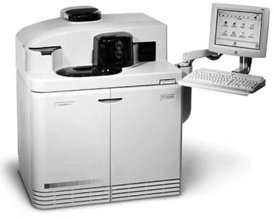

Vitros® eCI
Analizador para inmunoanálisis

DESCRIPCIÓN:
Sistema para la realización de pruebas de inmunodiagnóstico con acceso aleatorio y URGENCIA en muestras de fluido. Este equipo emplea una tecnología de detección por quimioluminiscencia mejorada® que proporciona resultados exactos y confiables.
CARACTERÍSTICAS:
Dimensiones: 130 cm x 112 cm x 74 cm (A x L x P).
Tecnología: Quimioluminiscencia mejorada®.
Velocidad: Hasta 90 pruebas/hora.
Volumen de muestra: 10 µL – 80 µL dependiendo de la prueba.
Puntas: Desechables para cada paciente.
Capacidad de muestras: 60 muestras cargadas simultáneamente.
Capacidad de reactivos: 20 posiciones refrigeradas para reactivos.
Memoria: 5,000 resultados.
Interfaz: Bi direccional para protocolos KERMIT y ASTM a través de puerto serial RS232.
Control de Calidad: Gráficos de Levey-Jennings.
Registro: 0211E99 SSA
DATOS COMPLEMENTARIOS: Para mayor información, asesoría técnica y pedidos favor de contactarnos en:
HEMOSER, S.A. DE C.V.
Teléfono: (55) 5255-2525
Fax: (55) 5255-3818
e-mail: hemoser@hemoser.com
www.hemoser.com